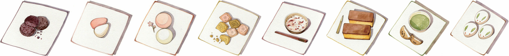
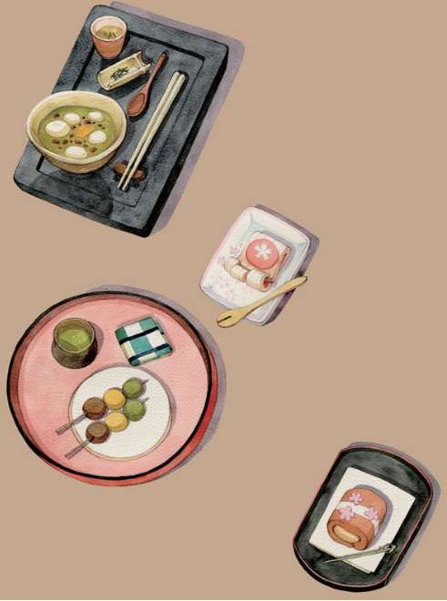

日式点心在日语中叫作“和菓子”，与“洋菓子”（西式点心）相对应。若要追溯它的源头，得说到1万多年前的绳文时代末期。那时，人们做出了日本最古老的加工食品“餅もち”。随后出现的“草饼”和“团子”流传至今，是日式点心的原型。
日式点心由古代流传至今，其间不断受到外来文化的影响。日本人又将传承下来的点心技艺理解、吸收之后，添加以新的想法。点心的传承不是简单的模仿，而是日本人创造力的体现。除了味觉上不断调整、改进，精致的造型也充分体现了日本的饮食美学。日式点心是前人的馈赠之物，早已深深渗透进日本人的一生。日本在一年中有许多“年中行事”：正月、女儿节、端午节、盂兰盆节等，在庆祝这些节日的时候，总有日式点心的陪伴；而从出生、入学、毕业、成人式，到结婚、生育、葬礼等人生中极为重要的活动或仪式中，也少不了日式点心的身影。日式点心已成为日本人一生中不可缺少的配角。

萩饼是在蒸熟的糯米中掺入少量粳米，轻捣后揉成团，再裹上一层豆粉而制成的年糕。自古以来，出生后的第三天都是非常重要的日子。在过去，受战乱的影响和医疗条件的有限等，出生后不久便死亡的不幸之事有很多，如果孩子能平安度过第三天，人们便能确信他能健康成长。因此到了第三天，人们会制作萩饼赠予关系亲近的朋友。在这天让产妇吃年糕或萩饼，还有祈祷产妇出奶顺畅的寓意。
鹤子年糕是用优质糯米粉制成的椭圆形红白两色年糕。从幼儿园到大学的入园、入学以及毕业式，都是成长道路上有特殊意义的大事件。日本人会和家人、朋友一起庆祝这些日子，品尝鹤子年糕、红白馒头和小豆饭。
红白馒头与鹤子年糕一样，也是红白两色。日本在1948年将法定的“成人日”定为1月15日，2000年将其改为1月第二个星期一。在这一天，全国各地方自治体都会为新的成人们举行庆祝仪式，分发红白馒头。
“干菓子”指干点心，与“生菓子”相对应，指水分较少的点心。订婚、结婚可谓一生中最令人愉悦的庆祝仪式。有婚约的男女双方在交换订婚彩礼时，会带上相应的点心作为庆贺。结婚典礼当天，也会供应松竹梅形状的干点心，以及送给客人礼品糕点。在礼品糕点的准备上，有时还会根据新人的要求制作出具有特别纪念意义的点心。
日本有还历（60岁）、古稀（70岁）、喜寿（77岁）、伞寿（80岁）、米寿（88岁）、白寿（99岁）的说法。在这些寿庆时，寿星会邀请亲友参加宴席，并分发礼品糕点。作为礼品的点心一般是小豆糯米饭和鹤子年糕，也根据不同年份的寿庆来构思不同造型的点心。
卡斯提拉源自葡萄牙，是一种将面粉、鸡蛋和砂糖搅拌后烘烤而成的蛋糕，16世纪在日本长崎发展起来。去探望病人时，根据病情的不同，一般会选择卡斯提拉、比较软的小麦煎饼类点心以及糖类等。而在探望产妇时则会选择麦芽糖作为点心。病人在痊愈后，要向来探望过自己的朋友赠送鹤子年糕、红白馒头、小豆饭等作为回礼。
家人、朋友聚在一起守夜时，会准备山形供果和喝茶时搭配的茶点心。葬礼时，根据各家宗派仪式的不同，举办方式不一样，会向来参加殡葬仪式的人赠送春日馒头、黄白馒头、上用馒头等。
用山药粉和优质糯米粉作为皮，里面包上豆沙馅制成的年糕叫作上用馒头。为死者祈求冥福、积聚功德的法事会在死者去世后四十九天内进行七次。在第七天和第四十九天会邀请家人朋友一起缅怀故人，并向他们分赠上用馒头和供果。
